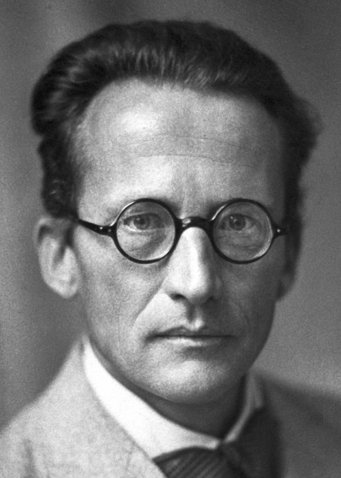

ERWIN SCHRÖDINGER (1926)
Erwin Rudolf Josef Alexander Schrödinger was born August 12, 1887, in Vienna, Austria-Hungary. He was an Austrian-Irish physicist, and he primarily worked in quantum theory. He is famous for the Schrödinger Equation, which allows one to calculate the wave function of a system. He also worked in physics, thermodynamics, statistical mechanics, general relativity, electrodynamics, and cosmology. In addition, he made several attempts to create a unified field theory. His “Schrödinger’s Cat” thought experiment is well known in popular culture and was first proposed after extensive correspondence with Albert Einstein.
Contributions to Atomic Theory
Erwin Schrödinger worked on the new quantum theory, writing about atomic theory and the theory of atomic spectra. In 1922, he geometrically analyzed the orbits of electrons, and found that quantum orbits had some geometric properties. This discovery helped pave the way for some parts of wave mechanics. In 1926, Schrödinger wrote a paper in which he presented his ‘Schrödinger Equation’, and gave its derivation. This paper is considered one of the most important papers of the 20th century. He wrote a second paper just 4 weeks later, which solved some additional quantum problems and gave a new derivation of the Schrödinger Equation. Later, he published a third paper, in which he showed that his approach was equivalent to that of Karl Heisenberg. In a fourth paper, he created a ‘complex’ solution to the wave equation, which eventually allowed him to reduce the order of the equation to 1. This showed that quantum mechanics was a ‘complex’ system, rather than a ‘real’ one.
Quantum Model
To read about the quantum mechanical model, please click here.
Experiments